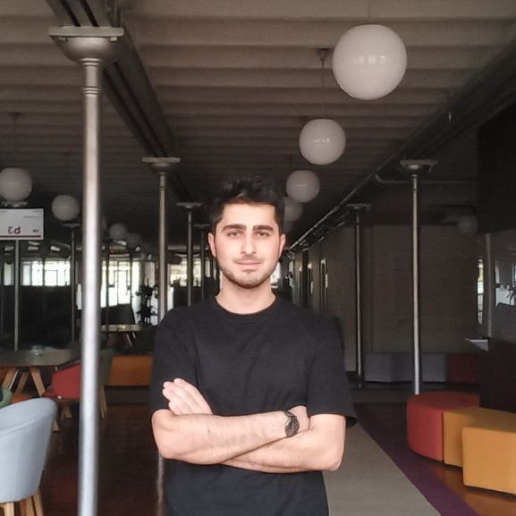

|  | I am a junior Information Technology student at ADA University, Azerbaijan. I consider myself an agile, lifelong learner who values every opportunity for academic and professional growth. I possess strong theoretical and practical skills in principles of information systems, programming, and Math. My main interest areas are Backend Development and Machine Learning. |
Mammad Mammadov |